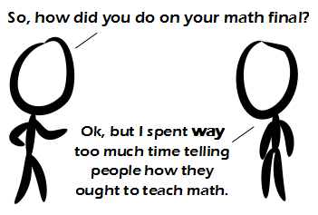

Comic JK 832
When I Feel Like It
⇤
<
?
>
⇥

⇤
<
?
>
⇥
Forum
.
RSS
.
Digg
.
Facebook
.
Reddit
.
Twitter
.
Stumbleupon
Inject your rants into number 832 here. Please, no spamming, trolling, phreaking, or asking how badly I failed my math final. It's amazing how differently some people teach math. At my college, most of the teachers do "regular" math finals, just like you'd expect. This most recent term, I took a class where the final had each problem as multiple choice, and you had 10 points to divide among the choices. The problems were then scored by the number of points you gave the correct answer. When we finished the test, we went online, gave ourselves an effort grade (which was the grade we received on the test) of 0, .5, or 1, then put the test in our backpacks and left. Later, we were emailed the answer key, and told to scan our test and email it to the teacher. I have some qualms about how well Honor Codes work, but I do appreciate them... I wish my final was like that... I had to skip 10 of the 60 problems because I didn't have time to finish. Also, is anyone from MV here? >I'm from Australia...does that count? >Maida Vale? >Mount Victoria? >>Don't mind if I do. >>>I LOL'd >Maarsseveen? >>>>MV=MontaVista In France, our exams can be pretty competitive and anything that doesn't answer the problem was considered a liability. No matter how much I liked to tell that the question was wrong or ambiguous, all I could do was write down a few assumptions on how I understood it. Though I don't think I could be held responsible for what I'd do after six hours spent writing down. Your mother thinks my math is hard. Your mother like my hard math. >I'm going to stop this real hard with some math! (((2^3.1415926)*(2^1.9695184))^-2) >>Now that you can just paste this about anywhere and get the answer (0.00083715...) it's not considered real math anymore. >>Prove that, given x_0_>sqrt(2), the recursive sequence defined by x_n+1_=(x_n_+2/x_n_)/2 is >sqrt(2) for all n in Naturals. Then, prove the bolzano weierstrass theorem. >>>Second one is on Wikipedia. I'm sure you could paste the first one into a math forum and get an answer too (and just wait until we get good automatic theorem provers!). >>>Firstly, your statement can be simplified to x>sqrt(2) ==> (x+2/x)/2>sqrt(2). Then, it can be rewritten as (x+2/x)>2*sqrt(2). Then, we simply perform math and find it to be true. >>>>I don't think so. x=100000 is greater than sqrt(2), but 0.50001 is certainly not. >>>>Was this really needed guys? >>>>>About as much as most math... >>What about this instead: given [x_0 = 2] and [forall n, x_{n+1} := round(x_{n+2} / (x_{n} + 1)) is defined], is [forall n, x_{n} >= 2]? (round rounds down) >>>42